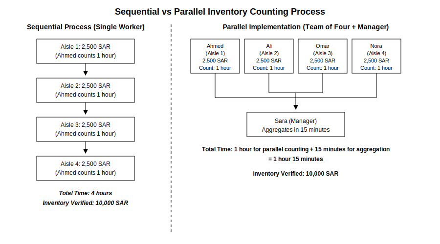
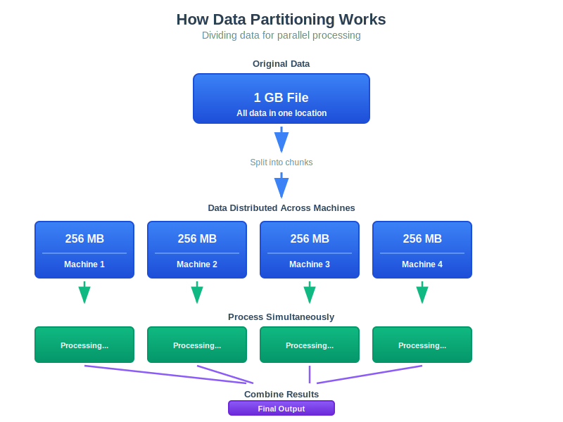
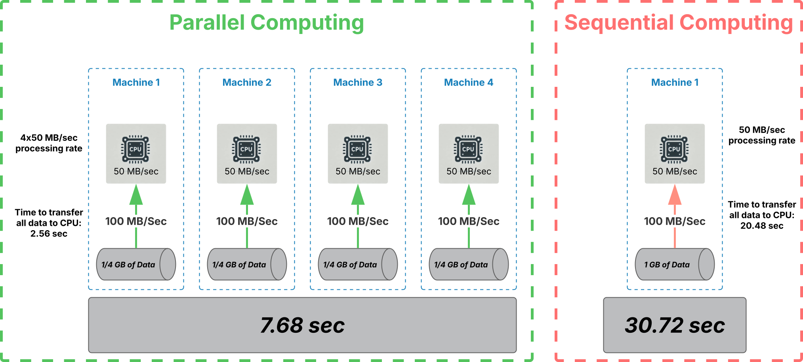
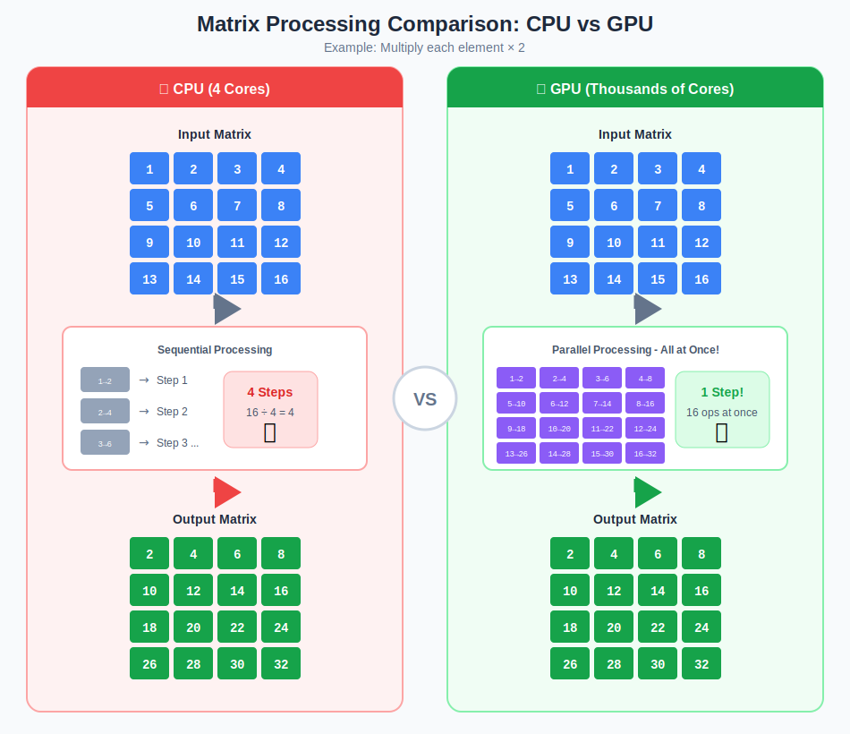
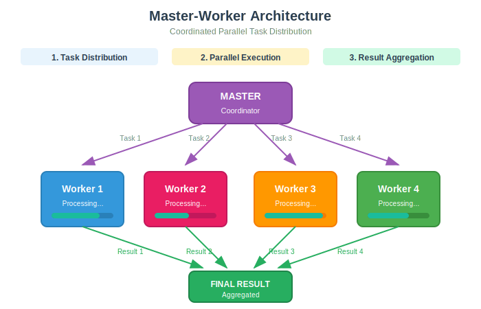

Learning Objectives
By the end of this session, students will be able to:
- Explain why parallel processing is essential for big data and AI
- Compare sequential vs. parallel processing using analogies
- Distinguish between scaling up (vertical) and scaling out (horizontal)
- Understand the data locality principle
- Describe the Master-Worker architecture pattern
- Connect these concepts to AI applications (model training, inference)
The Big Warehouse Story
The Sequential Approach
Ahmed works alone...
Ahmed starts from Shelf 1 → Shelf 2 → ... → Last Shelf
⏱️ Time Required: 4 hours! 😫| Worker | Task | Time |
|---|---|---|
| Ahmed | Count all products | 4 hours |
Problem: Impossible! Cannot finish the work in one day.
The Parallel Approach
Sarah the manager decides to hire a team:
Sarah (Manager)
↓ Distributes Work
┌──────────────────┐
↓ ↓ ↓ ↓
Mohammed Fatima Omar Nour
Section A Section B Section C Section D| Worker | Task | Time |
|---|---|---|
| Mohammed | Section A (500 products) | 1 hour |
| Fatima | Section B (500 products) | 1 hour |
| Omar | Section C (500 products) | 1 hour |
| Nour | Section D (500 products) | 1 hour |
| Sarah | Combine results | 15 minutes |
The Lesson Learned
| Approach | Workers | Time | Speedup |
|---|---|---|---|
| Sequential | 1 | 4 hours | — |
| Parallel | 4 + 1 manager | 1.25 hours | ~3.2x faster! |
This is exactly what computers do!
- 🖥️ One computer = Ahmed working alone
- 🖥️🖥️🖥️🖥️ Four computers = The team working together
Questions to Think About:
- Why did we need Sarah (the manager)? What is her role?
- What if Mohammed got sick in the middle of the day?
- How does Sarah collect results from everyone?
We'll answer these questions throughout this session!
1. Why Parallel Processing?
Definition: Parallel Processing is when multiple computations are carried out simultaneously. Instead of doing tasks one after another (sequential), we do them at the same time (parallel).
The Data Explosion
Did you know? 90% of all data worldwide has been produced in just the last two years!
This explosion of data creates a fundamental problem: traditional single-computer processing simply cannot keep up. The solution? Parallel processing — using multiple computers working together!
Where Parallel Processing Powers Our World
| Application | How Parallel Processing Helps |
|---|---|
| Search Engines | Google processes billions of queries daily using MapReduce across thousands of servers |
| AI/ML Training | Training GPT models requires thousands of GPUs working in parallel for months |
| Cloud Computing | AWS, Azure, and Google Cloud run millions of parallel tasks 24/7 |
| Scientific Research | Genome sequencing, climate modeling, and physics simulations rely on supercomputers |
Real-World Scale
| Company | Daily Processing |
|---|---|
| 8.5 billion searches per day | |
| YouTube | 500+ hours of video uploaded per minute |
| ChatGPT | 100+ million users daily |
| Netflix | 230+ million subscribers (not all streaming simultaneously, but massive concurrent users during peak times) |
The Problem: One computer simply cannot handle this volume. Even the fastest single machine would be overwhelmed.
AI and Parallel Processing
- Training GPT-4 required thousands of GPUs working together
- Your phone's AI features use parallel processing
- Image recognition, voice assistants — all parallel
2. Scaling Strategies
Definition: Scaling is how we increase our system's capacity to handle more work. There are two fundamental approaches.
Two Ways to Handle More Work
| Strategy | Analogy | Pros | Cons |
|---|---|---|---|
| Scale Up (Vertical) | Add more floors to ONE building | Simple, no coordination needed | Expensive, has physical limits |
| Scale Out (Horizontal) | Build MORE buildings | Unlimited growth, cheaper per unit | Needs coordination, more complex |
Vertical Scaling (Scale Up)
Before: [Small Server: 8 GB RAM, 4 cores]
↓
After: [Big Server: 256 GB RAM, 64 cores]
Same machine, just more powerful!When to use:
- Small to medium workloads
- Simple applications
- When you need simplicity over scale
Horizontal Scaling (Scale Out)
Before: [Server 1]
↓
After: [Server 1] [Server 2] [Server 3] [Server 4] ...
More machines working together!When to use:
- Big Data workloads
- AI/ML training
- When you need unlimited growth potential
AI Connection
| Workload | Scaling Strategy |
|---|---|
| Small ML model (scikit-learn) | One powerful GPU (scale up) |
| Large Language Model (GPT, Claude) | Thousands of GPUs (scale out) |
| OpenAI, Google, Meta | Massive scale out for AI training |
3. Dividing the Work: Data Partitioning
Definition: Data Partitioning is the process of dividing a large dataset into smaller chunks that can be processed independently by different machines.
The Bottleneck Problem
Analogy: Think of a stadium with one entrance vs. multiple entrances.
- Single door = All 50,000 fans enter through one gate = Very slow
- Multiple doors = Fans distributed across 10 gates = Much faster!
The same applies to data:
- Single disk = All data flows through one pipe = Bottleneck
- Multiple disks = Data flows through multiple pipes = Fast
How Partitioning Works
Parallel vs Sequential Example
Scenario: Process 1 GB of data
The Comparison
| Metric | Sequential | Parallel | Improvement |
|---|---|---|---|
| Machines | 1 | 4 | — |
| Data per machine | 1 GB | 256 MB each | 4x less each |
| Transfer pipes | 1 | 4 | 4x more |
| Time | ~30 seconds | ~5 seconds | ~6x faster! |
Key Insights
- Parallelism compounds: More machines = more CPUs + more disks + more network bandwidth
- Transfer overhead matters: Moving data takes time, but parallel transfers help dramatically
- The bottleneck shifts: With parallel disks, processing time becomes the limiting factor, not transfer
AI Application: Machine Learning Model Training
Simple Example: Training a neural network on a dataset
| Approach | Processing Time | Explanation |
|---|---|---|
| 1 Machine (Sequential) | 1 hour | Single GPU processes entire dataset sequentially |
| 4 Machines (Parallel) | 15-20 minutes | Dataset split across 4 GPUs, each processes 1/4 of data simultaneously. Communication overhead adds ~3-8 minutes. |
This is why companies like OpenAI, Google, and Meta use massive GPU clusters with thousands of machines!
4. CPU vs GPU — Why AI Needs GPUs
Definitions:
- CPU (Central Processing Unit): The brain of the computer. Few powerful cores that can do complex tasks.
- GPU (Graphics Processing Unit): Originally for graphics, now used for AI. Thousands of simple cores for parallel work.
The Chef Analogy
- CPU: One expert chef who can cook any dish perfectly — complex recipes, creative dishes, anything!
- GPU: 1,000 line cooks who can each do simple tasks very fast — chop, stir, fry — but all the same task!
Architecture Comparison
| Feature | CPU | GPU |
|---|---|---|
| Cores | 4-64 powerful cores | Thousands of simple cores |
| Cache | Large (fast memory) | Small |
| Control logic | Complex (can do anything) | Simple (specialized) |
| Best for | Complex, varied tasks | Same operation on many data |
Why GPUs for AI?
Matrix Parallel Processing Example
The Problem: Multiply every element in a large matrix by 2
Matrix A (1000 x 1000 = 1,000,000 elements)
┌─────────────────────────────┐
│ 1 2 3 4 5 ... │
│ 6 7 8 9 10 ... │
│ 11 12 13 14 15 ... │
│ ... │
└─────────────────────────────┘CPU Approach (Sequential)
CPU (4 cores) processes elements ONE BY ONE (or 4 at a time):
Step 1: Process element [0,0] → 1 × 2 = 2
Step 2: Process element [0,1] → 2 × 2 = 4
Step 3: Process element [0,2] → 3 × 2 = 6
...
Step 1,000,000: Process element [999,999]
⏱️ Total: 1,000,000 operations ÷ 4 cores = 250,000 stepsGPU Approach (Parallel)
GPU (1000 cores) processes MANY elements AT ONCE:
Core 1 Core 2 Core 3 ... Core 1000
↓ ↓ ↓ ↓
[0,0] [0,1] [0,2] ... [0,999]
1 × 2 2 × 2 3 × 2 ... 1000 × 2
↓ ↓ ↓ ↓
2 4 6 ... 2000
⏱️ Total: 1,000,000 elements ÷ 1000 cores = 1,000 steps!Visual Diagram — GPU Parallel Matrix Processing
┌─────────────────────────────────────────────────────────┐
│ INPUT MATRIX │
│ ┌───┬───┬───┬───┬───┬───┬───┬───┐ │
│ │ 1 │ 2 │ 3 │ 4 │ 5 │ 6 │ 7 │ 8 │ ← Row 1 │
│ └───┴───┴───┴───┴───┴───┴───┴───┘ │
└─────────────────────────────────────────────────────────┘
↓
Split to GPU Cores
↓
┌─────────────────────────────────────────────────────────┐
│ GPU CORES │
│ ┌────────┐ ┌────────┐ ┌────────┐ ┌────────┐ │
│ │ Core 1 │ │ Core 2 │ │ Core 3 │ │ Core 4 │ ... │
│ │ 1→2 │ │ 2→4 │ │ 3→6 │ │ 4→8 │ │
│ │ ×2 │ │ ×2 │ │ ×2 │ │ ×2 │ │
│ └────────┘ └────────┘ └────────┘ └────────┘ │
│ ↓ ↓ ↓ ↓ │
│ 2 4 6 8 │
└─────────────────────────────────────────────────────────┘
↓
Combine Results
↓
┌─────────────────────────────────────────────────────────┐
│ OUTPUT MATRIX │
│ ┌───┬───┬───┬───┬───┬────┬────┬────┐ │
│ │ 2 │ 4 │ 6 │ 8 │10 │ 12 │ 14 │ 16 │ ← Row 1 × 2 │
│ └───┴───┴───┴───┴───┴────┴────┴────┘ │
└─────────────────────────────────────────────────────────┘The Key Insight
| Approach | Cores | Steps for 1M elements | Speed |
|---|---|---|---|
| CPU | 4 | 250,000 steps | Slow |
| GPU | 1000 | 1,000 steps | 250x Faster! |
Real Performance
| Task | On CPU | On GPU |
|---|---|---|
| Training a small model | Days to weeks | Hours to days |
| Image processing | Seconds per image | Milliseconds per image |
5. Master-Worker Architecture
Definition: The Master-Worker pattern is a distributed computing architecture where one node (the Master) coordinates work among multiple nodes (Workers). Workers do the actual computation; the Master manages and combines results.
The Manager Analogy
Remember Sarah from our warehouse story?
- Sarah (Master): Assigns work, tracks progress, collects results
- Mohammed, Fatima, Omar, Nour (Workers): Execute the actual counting
Master Responsibilities
- Divide: Split data into chunks
- Assign: Send chunks to workers
- Track: Monitor who is doing what
- Collect: Gather results from workers
- Combine: Merge all results into final output
Architecture Diagram
Key Point: Workers don't talk to each other — only to the Master!
AI Connection
| Concept | In Distributed Training |
|---|---|
| Master | Parameter Server |
| Workers | GPU nodes training on data portions |
| Results | Gradients (how to update the model) |
| Combine | Gradient synchronization |
6. Data Locality — The Golden Rule
Definition: Data Locality is the principle that computation should happen as close to the data as possible. Moving data is expensive; moving computation is cheap.
Speed Hierarchy
| Location | Speed | Analogy |
|---|---|---|
| RAM (local memory) | Instant | Reading from your desk |
| Local disk | Fast | Walking to your bookshelf |
| Network (same building) | Slow | Waiting for mail delivery |
| Internet (another country) | Very slow | International shipping |
The Library Analogy
Imagine you need to read a 1000-page book:
- Bad approach: Photocopy the entire book and carry it home = Moving data to computation
- Good approach: Go to the library and read it there = Moving computation to data
In distributed systems, sending the small "program" to where the big "data" lives is much faster than moving huge datasets across the network!
AI Connection
- Why data centers matter for AI training: Data and GPUs must be close together
- Why companies build GPUs close to storage: Minimize data transfer time
- Cloud regions: Choose the region closest to your data
7. When Things Go Wrong — Fault Tolerance
Definition: Fault Tolerance is the ability of a system to continue operating properly in the event of the failure of some of its components.
The Reality
In a system with 1,000 machines, something WILL fail.
- Hard drives die
- Networks disconnect
- Power goes out
- Software crashes
Question: How do we keep working despite failures?
Detection — How Do We Know Something Failed?
Every few seconds, Master asks each Worker:
Master: "Worker 1, are you alive?"
Worker 1: "Yes, still working!"
Master: "Worker 2, are you alive?"
Worker 2: "Yes, still working!"
Master: "Worker 3, are you alive?"
Worker 3: ... (no response)
Master: "Worker 3 failed! Reassigning its task..."Recovery — What Happens Next?
- Failed worker's task → Assigned to another worker
- Data on failed machine → Restored from backup copy
- Key principle: Design assumes failure will happen
| Strategy | Description |
|---|---|
| Redundancy | Keep copies of data on multiple machines |
| Health checks | Regularly ping workers to detect failures |
| Task re-execution | Failed tasks get reassigned to healthy workers |
| Checkpointing | Save progress periodically to resume after failures |
Discussion Point: "Netflix has thousands of servers. How do they stay online 24/7?"
Answer: They designed their entire system assuming failures happen constantly. When one server dies, traffic immediately routes to others. They even deliberately cause failures (Chaos Monkey) to test their resilience!
Summary
Core Concepts Covered
| Concept | Key Point | Real-World Example |
|---|---|---|
| Parallel Processing | Divide work among many workers | Sarah's team vs Ahmed working alone |
| Data Partitioning | Split data across machines | Dividing 1 GB into 4× 256 MB chunks |
| Scale Up vs Scale Out | Bigger machine vs More machines | Skyscraper (vertical) vs Campus (horizontal) |
| CPU vs GPU | Few powerful cores vs Many simple cores | Expert chef vs Assembly line workers |
| Master-Worker | One coordinator, many executors | Manager distributing tasks to team members |
| Data Locality | Move compute to data, not vice versa | Process data where it's stored to avoid transfer delays |
| Fault Tolerance | Design for failure, recover gracefully | Reassign failed worker's task to another machine |
Key Takeaways
Glossary of Key Terms
| English | Arabic | Definition |
|---|---|---|
| Parallel Processing | المعالجة المتوازية | Running multiple computations simultaneously |
| Sequential Processing | المعالجة التسلسلية | Running computations one after another |
| Data Partitioning | تقسيم البيانات | Splitting data into chunks for distribution |
| Vertical Scaling | التوسع الرأسي | Making one machine more powerful |
| Horizontal Scaling | التوسع الأفقي | Adding more machines |
| Master Node | العقدة الرئيسية | The coordinator in a distributed system |
| Worker Node | عقدة العامل | A machine that executes tasks |
| Data Locality | موقعية البيانات | Keeping computation close to data |
| Fault Tolerance | التسامح مع الأخطاء | Ability to continue despite failures |
| GPU | وحدة معالجة الرسوميات | Processor optimized for parallel math |
| Bottleneck | عنق الزجاجة | Point that limits overall performance |
Bridge to Session 2
We've talked about how data is processed across many machines — potentially in different countries, managed by different companies. But what happens to YOUR data when it's spread across systems you don't control?
In the next session, we'll explore a critical question: How much can be learned about YOU from 'anonymous' data?